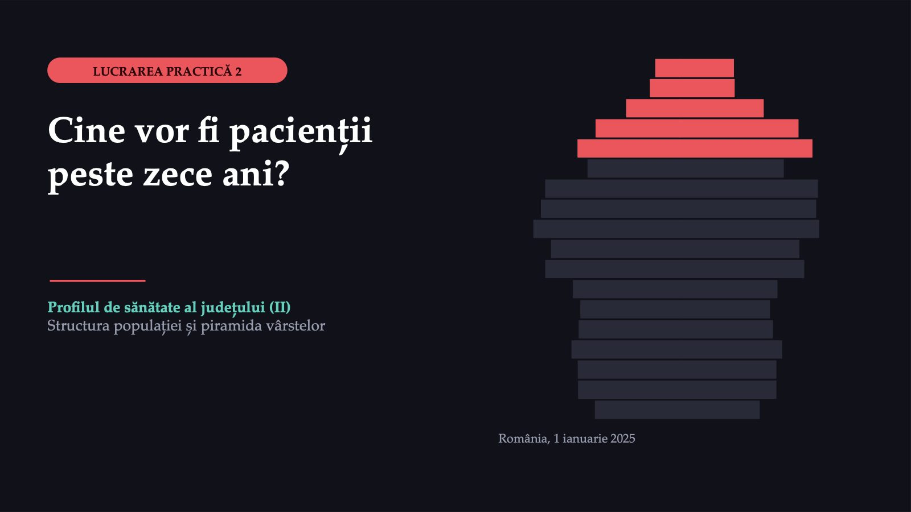
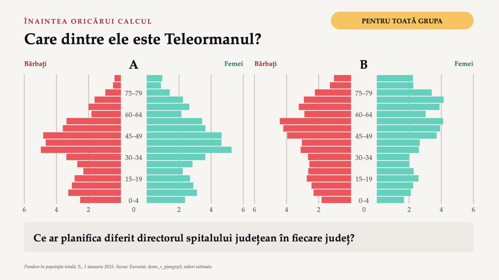
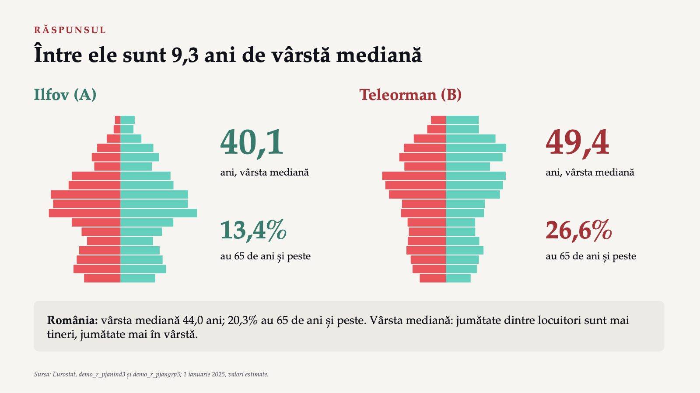
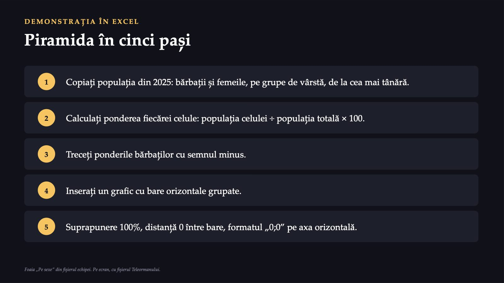
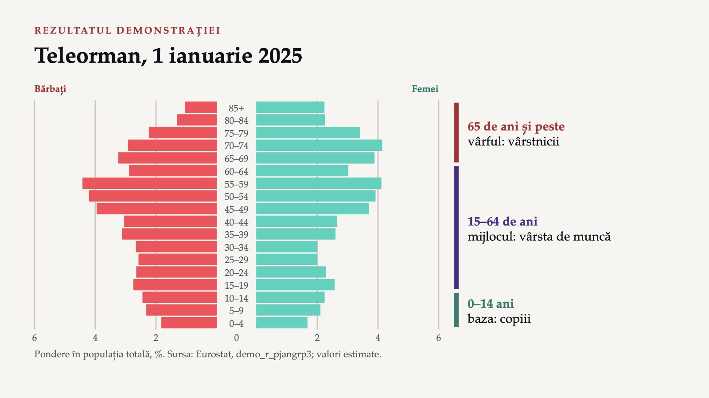
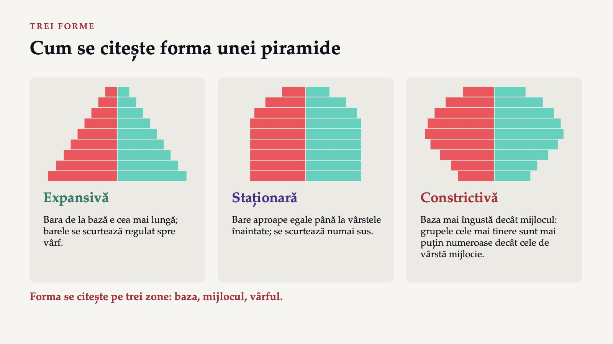
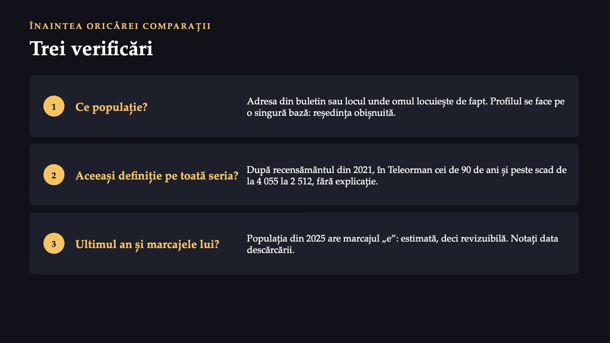
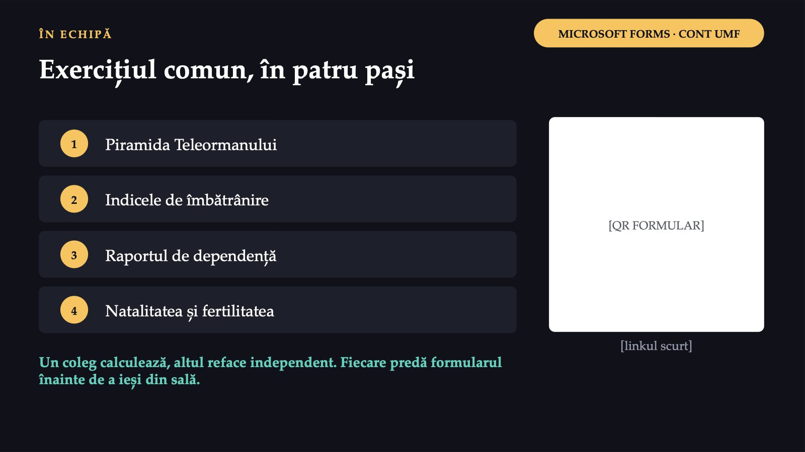
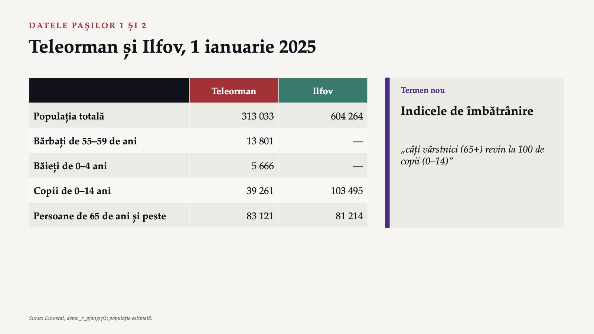
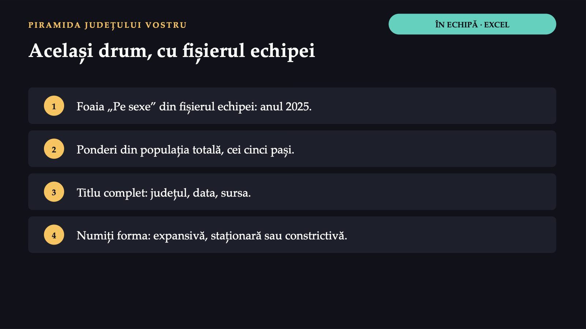

Cine vor fi pacienții peste zece ani?

1 / 15Care dintre ele este Teleormanul?

2 / 1540,1

3 / 15Piramida în cinci pași

4 / 15Teleorman, 1 ianuarie 2025

5 / 15Cum se citește forma unei piramide

6 / 15Criteriu de lucru: comparați lungimea barelor de jos, de la mijloc și de sus.
Trei verificări

7 / 15Exercițiul comun, în patru pași

8 / 15Teleorman și Ilfov, 1 ianuarie 2025

9 / 15Dependența și natalitatea
 10 / 15
10 / 15Același drum, cu fișierul echipei

11 / 15Răspunsul apare după ședință
Răspunsul apare după ședință
Răspunsul apare după ședință
Răspunsul apare după ședință
Capitolul demografic al județului vostru
![ACASĂ, ÎN CEL MULT DOUĂ ZILE Capitolul demografic al județului vostru Sinteză, prin rotație: ce indicator ați pune pe prima pagină a profilului și ce serviciu decurge din el? 1 Piramidele din 2025 și 2019, cu rezerva saltului din 2021–2022. 2 Indicele de îmbătrânire și rapoartele de dependență și de feminitate, comparate cu țara. 3 Din Eurostat: natalitatea, fertilitatea, sporul natural, soldul migrației (2024). 4 O constatare și o consecință pentru serviciile din 2030–2040. 5 Opțional: proiecția EUROPOP2019 pentru județ (2025, 2040), cu rezerva bazei din 2019. Individual, în formularul de acasă, cu fișierul Excel.](diapozitive/LP02/014.jpg) 14 / 15
14 / 15Trei întrebări pentru final
 15 / 15
15 / 15Săgeți sau spațiu: navigare · O: vedere de ansamblu · N: notele prezentatorului · F: ecran complet · Esc: închidere